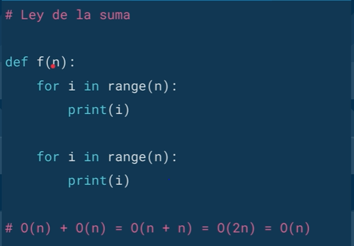
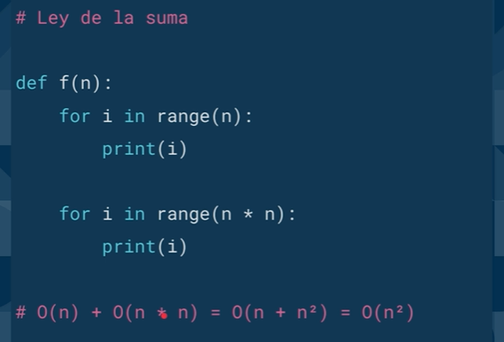
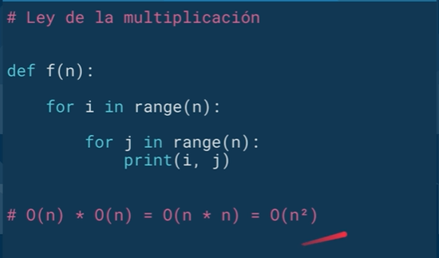
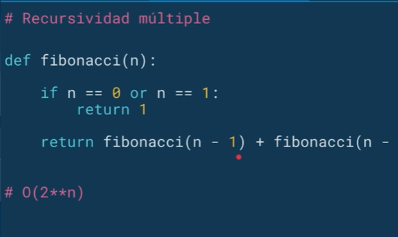

4.2 Complejidad algoritmica
La complejidad algorítmica nos permite comparar la eficiencia de 2 algoritmos, esto a su vez va a predecir el tiempo que va a tomar resolver un problema. No solamente podemos analizar la complejidad desde la perspectiva temporal, también la podemos hacer desde la espacial, como por ejemplo cuanto espacio en memoria necesitamos.
La complejidad algorítmica temporal la podemos definir como T(n) el cual determinara el tiempo que demora en resolver nuestro algoritmo.
Aproximaciones
- Cronometrar el tiempo en el que corre un algoritmo
- Contar los pasos con una medida abstracta de operacion
- Contar con los pasos conforme nos aproximamos al infinito
Conteo abstracto de operacion
- A cada operacion se le asigna el valor de 1 (Declaracion de variable, calculos, cada print es una operacion, returns, etc)
- A cada operacion que depende de un numero N para ejecutarse se el asigna el valor de X ( Un loop que dependa de una variable que ingrese el usuario, no se sabe el numero de veces que se ejecutara).
- Luego se obtiene una expresion matematica que se puede evaluar para calcular el crecimiento de la funcion.
- En este analisis aun se toman en cuenta las pequeñas variaciones. Es una previa de la mejor opcion que es Big O.
Notacion Asintotica (Big O Notation)
Cuando hablamos de notación asintótica no importan las variaciones pequeñas, el enfoque se centra en lo que pasa conforme el tamaño del problema se acerca al infinito.
Siempre tenemos que estar preparados para cualquier caso, por lo que tenemos que saber medir a nuestro algoritmo en el mejor, promedio y peor de los casos.
Lo mejor que nos permite comparar nuestros algoritmos y su capacidad es medir el peor de los casos, ahí es donde entra el Big O notation, donde lo único que importa es el termino de mayor tamaño, sin importar las constantes que las acompañan.
- No importan las variaciones pequeñas
- El enfoque se centra en lo que pasa conforme el tamaño del problema se acerca al infinito
- Mejor promedio de los casso, promedio, pero de los casos
- Big O -> Nada mas importa el termino de mayor tamaño
Ley de la Suma con notacion Big O
Se demuestra la ley de la suma en la notacion Big O donde: O(n) + O(n) = O(2n), y como las pequeñas variaciones no importan el resultado es O(n)

Otro ejemplo de ley de la suma:

Ley de la multiplicacion con notacion Big O

Recursividad multiple con notacion Big O
En este caso se interpreta que por cada llamada de la funcion fibonacci se llama dos veces a si misma y esas dos veces a su vez llaman dos veces cada una. Por lo tanto el crecimiento es exponencial O(2**n).

Complejidad Algoritmica
Existen distintos tipos de complejidad algorítmica:
- O(1) Constante: no importa la cantidad de input que reciba, siempre demorara el mismo tiempo.
- O(n) Lineal: la complejidad crecerá de forma proporcional a medida que crezca el input.
- O(log n) Logarítmica: nuestra función crecerá de forma logarítmica con respecto al input. Esto significa que en un inicio crecerá rápido, pero luego se estabilizara.
- O(n log n) Log lineal: crecerá de forma logarítmica pero junto con una constante.
- O(n²) Polinomial: crecen de forma cuadrática. No son recomendables a menos que el input de datos en pequeño.
- O(2^n) Exponencial: crecerá de forma exponencial, por lo que la carga es muy alta. Para nada recomendable en ningún caso, solo para análisis conceptual.
- O(n!) Factorial: crece de forma factorial, por lo que al igual que el exponencial su carga es muy alta, por lo que jamas utilizar algoritmos de este tipo.

Backlinks: Inteligencia Artificial:4. POO y Algoritmos con Python